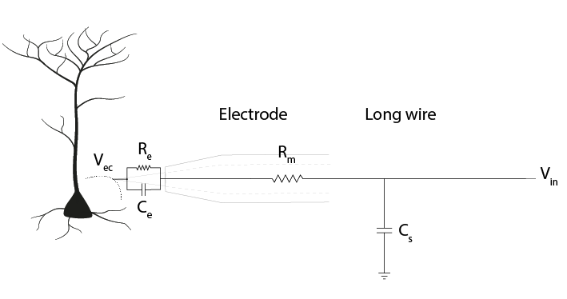
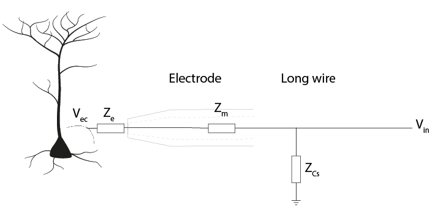
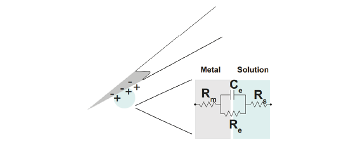
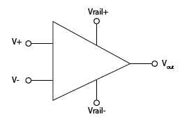
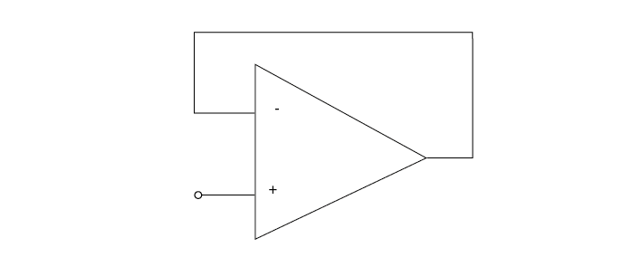
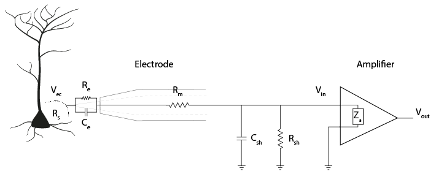

Theory Day 2¶
To get our measurements of neural activity, we are trying to:
Detect an electric potential difference.
Amplify this tiny signal.
Filter frequencies that are not of interest.
Digitize the signal for data visualisation and recording.
Yesterday, we discussed how the electrode can detect changes in an electric potential difference. Today and tomorrow, we will expand upon what happens in the headstage. This is where the signal is amplified, filtered and digitized. We will cover how we can get as much signal as possible to our computer without drawing (too much) current from the brain and disturbing our system.
Impedance¶
If we apply a direct voltage (e.g. a battery) to a resistor or circuit and measure the current flow, we can determine the resistance. What happens when we apply an alternating signal instead, such as a sinusoidal wave or our neuronal signals? In these cases, we need to use Impedance (Z), measured in Ohm. The impedance represents opposition to current flow measured in both magnitude and phase, which allows us to describe the relationship between voltage and current for time-varying signals. We can measure impedance values of a component at different frequencies, so that we understand both the magnitude and phase relationship between V and I over a broad frequency range (from 1 Hz to 10 kHz). Let’s examine the response of resistors and capacitors to an applied sinusoidal voltage (an alternating signal).
Resistors¶
For resistors, the impedance magnitude (Z) is constant and does not vary with the frequency of signal applied. The impedance follows Ohm’s Law (V = IR), which doesn’t take the frequency of the signal into account.
Capacitors¶
In contrast, for a capacitor the current is 90° out of phase with the voltage, and the magnitude of impedance decreases as the frequency increases. We can therefore only describe the impedance of a capacitor at a certain frequency.
So the magnitude of impedance of a capacitor will decrease with increasing frequency. The larger the capacitance C, the lower the impedance at a specific frequency.
Hint
If you want to play around with this idea before moving on, try plotting the relationship between impedance and frequency for a capacitor with C = 2. Then plot the same line for C = 20. What is the difference? Remember that we are interested in signals that last 1 ms, so are around 1kHz.
Why is impedance important?¶
We saw in our equivalent circuits, that currents coming from our neurons can be lost to ground by passing through the electrode circuit and the shunt capacitance (Csh), causing a difference between Vec and Vin.
We can just replace these components with a representation of the impedance (Z) they provide.
This gives us a voltage divider, similar to the one we built yesterday, where:
Therefore, the ratio of impedance between the electrode and shunt capacitance determines how much of our electrode tip voltage reaches the rest of the recording system.
To get more of our voltage Ve into our recording system, we can adjust this ratio by:
Reducing the electrode impedance Ze
Increasing the shunt impedance Z Csh
Electrode Impedance¶
The impedance of an electrode is a measure of its ability to resist the flow of charge across the electrode-solution interface (i.e., across the electronic conductor (metal) and ionic conductor (extracellular fluid)). It is the impedance of the whole electrode equivalent circuit we built yesterday, consisting of the resistance of the solution (Rs), the resistance of the electrode metal (Rm) and the resistance (Re) and capacitance (Ce) of the double layer at the electrode-solution interface.
Since Re is large, in the order of several megaOhms, only very little current can take this route. Therefore, in practice, the electrode is primarily the double-layer capacitor Ce in series with Rm and Rs (Robinson, 1968).
So far, we know that the impedance magnitude of a capacitor decreases with increased capacitance, and that electrode impedance is dominated by double layer capacitor, Ce. Therefore, to decrease our electrode impedance, we need to increase the electrode capacitance Ce. How can we increase the value of Ce?
The capacitance of a capacitor, in Farads, is proportional to the area of the capacitor plates (A) divided by the distance (d) between them. ε is the electrostatic constant. To make C bigger, we can increase A by increasing the surface area of the electrode. We can also coat electrodes with materials complemented with pseudo-capacitance, such as conducting polymers or transition metal oxide films, such as IrOx (Green, Lovell, Wallace, & Poole-Warren, 2008; Musa, 2011). Electrode impedance magnitude is often measured at 1 kHz, before and after electrode coating, showing an impedance decrease up to 10-fold (Neto et al., 2018). By increasing the capacitance (Ce) of our electrode, the electrode impedance (Ze) will be smaller, preserving more of our signal amplitude at Vin (Vin = Vec). Electrodes impedance values are in the kOhm to MOhm range at 1 kHz.
Recording System Impedance¶
The building blocks of the recording system are amplifiers. These integrated circuits provide incredibly high ‘input impedance’. It is as if any input has to cross a huge resistor first before getting to the amplifier.
Amplifiers¶
Let’s go over what an operational amplifier does.
The operational amplifier has two inputs, and basically takes the voltage difference between them. If that difference is positive, it connects its output to one ‘power rail’, like for example 3V, and if it’s negative it connects its output to the other rail, that could be ground, or -3V. Another way to say the same thing would be that it amplifies the difference between its input with a huge factor, also called ‘gain’.
While doing that, the operational amplifier draws basically no current on its inputs.
If we connect the output of the operational amplifier to the ‘-’ input, then the following happens:
Initially, if ‘+’ is higher than ‘-‘, the operational amplifier will output a very high voltage.
If we connect the output back to ‘-’, the amplifier will continue to output a high voltage, but now this voltage starts to increase the value of ‘-‘, bringing the value of the inputs closer together. This behaviour will keep the voltages at its ‘+’ and ‘-’ inputs the same.
Now, the ‘-’ input is always actively driven to follow the voltage on the ‘+’ input. This means that whatever voltage we connect to the ‘+’ input can be measured just by looking at the ‘-’ input (which is connected to / the same as the output).
We can look at the voltage that is on ‘+’ by just measuring the output of the operational amplifier, BUT because the ‘+’ input draws almost no current at all (in other words, very high input impedance), we can now measure weak signals. The output of the operational amplifier on the other hand side has very low output impedance, in other words we can draw a lot of current from it and it will keep its voltage.
You can run this example in the simulator, and see if what we said above about the operational amplifier makes sense. You should see that the operational amplifier stops the cable from drawing current from the electrode, and that the operational amplifier instead manages to ‘drive’ the cable effortlessly, by providing a lot of current.
Our electrodes will be attached to a headstage, which contains an amplifier. This amplification step performs several functions:
Prevents us from drawing current from the brain and allows to drive current to ADC and computer
Rejects common mode noise
Increases the range of the signal to fit the dynamic range of our digitizer
Amplifier Impedance¶
The input impedance of an amplifier is very high. This means that the circuit acts as though the current has to cross a very high resistor to actually enter the amplifier. The amplifier input impedance, Za represents its tendency to oppose the flow of current from the electrodes through the amplifier to ground. This high impedance prevents us from drawing current from the brain to ground. By designing amplifiers which have high input impedances, the current flow becomes low (Ferree et al., 2001).
Here is the amplifier added into our circuit diagram:
The path from our neuronal currents first crosses the electrode and then goes either through the amplifier to ground, or through shunting routes (Csh and Rsh) to ground. The amplifier has its own (very high) impedance Za.
The output impedance of amplifiers is very low. Low impedance means that a lot of current can flow. This current enables the driving of the signal through all the subsequent circuits (e.g., interconnect lines, multiplexer, and ADC). By placing an amplifier in our circuit, we make sure that the rest of our recording circuit is driven by current provided by the amplifier, not by current provided by the neurons.
Shunt Impedance¶
Shunt impedance is the total impedance of shunt capacitance Csh and shunt resistance Rsh. Remember that any two conducting surfaces, with a non-conducting layer in between, is a capacitor. Shunt capacitance arises mainly from the capacitance across the thin insulation isolating an electrode shaft and the surrounding electrolyte, as well as the cumulative capacitance along cables and connectors (Robinson, 1968). Being capacitive, the impedance decreases with signal frequency (Nelson et al., 2008). Therefore, to create a large shunt impedance, the shunt capacitance should be small:
Basically, the more signal takes this route to ground, the less signal we will pick up in our recording signal. Though there is also a resistive shunt element (Rsh), at the high frequencies we are interested in the capacitive component will usually have the largest effect (because of its low impedance), so Rsh is often ignored.
Effective amplifier input impedance¶
The ‘effective amplifier input impedance’, Za’ is the total impedance to the ground seen from the electrode. This includes the path through the amplifier AND the path through the parallel shunting routes (shunt resistance and capacitance) to ground outside the amplifier.
Za’ = ‘effective amplifier’ impedance (Za + Z Csh + Rsh)
Ze = electrode impedance
The ratio between the effective amplifier impedance and the electrode impedance determines how much of our precious signal we can pick up. This is particularly important when the electrodes have a large impedance themselves and are therefore more susceptible to attenuation by shunt capacitance (Obien et al., 2015; Robinson, 1968). For instance, the shunt capacitance for a tungsten wire (~50 to 100 pF) is usually higher than for a silicon probe (5-20 pF/cm). (Why? Think of what makes a capacitor, and the relative shape and conductances of these electrodes).
To have no net current flowing, the shunt and amplifier impedance should be infinite. Moreover, if Za’ is not substantially greater than Ze, Vin will be much lower than Vec. The best-case scenario is to have high Za’ and low Ze. To have low Za’, we need amplifiers with high input impedance and low shunt capacitance (high impedance).
Referencing¶
We live in an (electrically) very noisy world. We always have to measure our signal as the difference between two points- one is our recording electrode. The other point is our reference, which can be another electrode in the brain or a screw in the animal’s skull. The choice you make here is very important for your recording: the amplifier will output the difference between your recording electrode and your reference point. That means that the amplifier will do its best to get rid of any signal that the two share. If the recording electrode picks up 50 Hz noise generated by the mains power supply in the walls, you want the amplifier to get rid of it, so it’s best to use a reference point that will also pick up this noise. However, if your reference is picking up signals that you are interested in, the amplifier will get rid of those too. To choose an appropriate reference, you have to decide what qualifies as noise in your experiment.
Differential Amplifiers¶
The amplification of the potential difference between the microelectrode and the reference electrode (in the order of microvolts) is a crucial step, and is accomplished with differential amplifiers that amplify the differences, rejecting the noise that is often introduced as common-mode potential in the circuit (i.e., noise identical in the recording and reference electrodes typically caused by motion artifacts and capacitive coupling of the body and electrode lead with power line fields (Nunez & Srinivasan, 2009)).
Acknowledgements¶
Written by:
Alexandra Leighton
Joana Neto
Jakob Voigts
Aarón Cuevas López
With material from:
Joana Neto, 2018; Materials and neuroscience: validating tools for large-scale, high-density neural recording, 2018.
Jon Newman and Jakob Voigts, 2017; Intro to Chronic Ephys (presentation at TENSS)
Mitra Javadzadeh, 2017; Building an analog ephys recording system (practical exercises developed for TENSS)
Circuit Simulator version 2.4.6js. Original by Paul Falstad, JavaScript conversion by Iain Sharp
Licensing¶
This work is licensed under CC BY-SA 4.0.
To view a copy of this license, visit https://creativecommons.org/licenses/by-sa/4.0/
References¶
Ferree, T.C., Luu, P., Russell, G.S., and Tucker, D.M. (2001). Scalp electrode impedance, infection risk, and EEG data quality. Clinical Neurophysiology 112, 536–544.
Nelson, M.J., Pouget, P., Nilsen, E.A., Patten, C.D., and Schall, J.D. (2008). Review of signal distortion through metal microelectrode recording circuits and filters. Journal of Neuroscience Methods 169, 141–157.
Neto, J.P., Baião, P., Lopes, G., Frazão, J., Nogueira, J., Fortunato, E., Barquinha, P., and Kampff, A.R. (2018). Does Impedance Matter When Recording Spikes With Polytrodes? Front. Neurosci. 12, 715.
Obien, M.E.J., Deligkaris, K., Bullmann, T., Bakkum, D.J., and Frey, U. (2015). Revealing neuronal function through microelectrode array recordings. Front. Neurosci. 8.
Robinson, D.A. (1968). The electrical properties of metal microelectrodes. Proc. IEEE 56, 1065–1071.